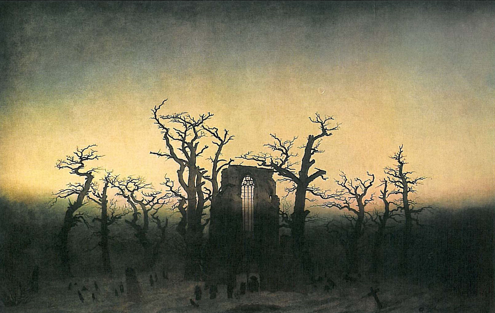

Projeto WEB
Galeria de Artes
Galeria de arte é um espaço arquitetônico que expõe e comercializa adequadamente as obras de arte. Os espaços são definidos para proporcionarem segurança e uma correta apreciação dos objetos expostos, levando em consideração o posicionamento, iluminação e possibilidade de distanciamento e circulação do espectador.

História da arte
História da arte é a história de qualquer atividade ou produto realizado com propósito estético ou comunicativo, enquanto expressão de ideias, emoções ou formas de ver o mundo. Ao longo do tempo, as artes visuais têm sido classificadas de várias formas diferentes, desde a distinção medieval entre as artes liberais e as artes mecânicas, até à distinção moderna entre belas artes e artes aplicadas, ou às várias definições contemporâneas, que definem arte como a manifestação da criatividade humana.
O alargamento da lista das principais artes durante o século XX definiu nove: arquitetura, dança, escultura, música, pintura, poesia (aqui definida em sentido lato como forma de literatura com um propósito ou função estética, o que inclui também o teatro e a narrativa literária), o cinema, a fotografia e a banda desenhada.
Quando considerada a sobreposição de termos entre as artes plásticas e as artes visuais, inclui-se também o design e as artes gráficas. Para além das formas tradicionais de expressão artística, como a moda ou a gastronomia, estão a ser considerados como arte novos meios de expressão, como o vídeo, arte digital, performance, a publicidade, a animação, a televisão e os jogos de computador.
Pré-história
Os primeiros artefactos tangíveis que podem ser considerados arte aparecem na Idade da Pedra (Paleolítico superior, Mesolítico e neolítico). Durante o Paleolítico (25 000-8 000 a.C.) o Homem era ainda caçador-coletor, habitando cavernas que viriam a ser os primeiros suportes de arte rupestre.[1] Após o período de transição do Mesolítico, é durante o Neolítico (6 000-3 000 a.C.) que o Homem se sedentariza e inicia a prática da agricultura.
À medida que as sociedades se tornam cada vez mais complexas e a religião ganha importância, tem início a produção de artesanato. Durante a Idade do Bronze (c. 3 000-1 000 a.C.), têm início as primeiras civilizações proto-históricas.
Arte Antiga
Arte antiga, ou arte da antiguidade, designa as criações artísticas do primeiro período da História que se inicia com a invenção da escrita, e durante o qual aparecem as primeiras grandes cidades nas margens dos rios Nilo, Tigre, Eufrates, Indo e Amarelo e se destacam as grandes civilizações do Médio Oriente (Egípcia e Mesopotâmica). Ao contrário de períodos anteriores, as manifestações artísticas ocorreram em todas as culturas de todos os continentes.
Um dos maiores progressos deste período foi a invenção da escrita, criada sobretudo a partir da necessidade de manter registos de natureza económica e comercial. A primeira forma de escrita foi a cuneiforme, surgida na Mesopotâmia por volta de 3 500 a.C. 3 500 a.C., baseada em elementos pictográficos e ideográficos e registada em suportes de argila. Os sumérios desenvolveriam mais tarde a escrita com sílabas, enquanto que a escrita Egípcia recorria a hieróglifos. A língua hebraica foi uma das primeiras a utilizar um alfabeto, que atribui um símbolo a cada fonema.

Arte na Idade Moderna
A Idade Moderna inicia no Renascimento, período de grande esplendor cultural na Europa. A religião deu lugar a uma concepção científica do homem e do universo, no sistema do humanismo. As novas descobertas geográficas levaram a civilização europeia a se expandir para todos os continentes, e através da invenção da imprensa a cultura se universalizou. Sua arte foi inspirada basicamente na arte clássica greco-romana e na observação científica da natureza.
Arte na Idade Contemporânea
ntre meados do século XIX e o início do XX se lançaram as bases da sociedade contemporânea, marcada no terreno político pelo fim do absolutismo e a instauração dos governos democráticos. No campo econômico, marcaram esta fase a Revolução Industrial e a consolidação do capitalismo, que tiveram respostas nas doutrinas de esquerda como o marxismo, e nas lutas de classes. Na arte o que tipifica o período é a multiplicação de correntes grandemente diferenciadas. Até o fim do século XIX surgiram, por exemplo, o realismo, o impressionismo, o simbolismo e o pós-impressionismo.
O século XX se caracterizou por uma forte ênfase no questionamento das antigas bases da arte, propondo-se a criar um novo paradigma de cultura e sociedade e derrubar tudo o que fosse tradição. Até meados do século as vanguardas foram enfeixadas no rótulo de modernismo, e desde então elas se sucedem cada vez com maior rapidez, chegando aos dias de hoje a um estado de total pulverização dos estilos e estéticas, que convivem, dialogam, se influenciam e se enfrentam mutuamente. Também surgiu uma tendência de solicitar a participação do público no processo de criação, e incorporar ao domínio artístico uma variedade de temas, estilos, práticas e tecnologias antes desconhecidas ou excluídas. Entre as inúmeras tendências do século XX podemos citar: art nouveau, fauvismo, pontilhismo, abstracionismo, expressionismo, realismo socialista, cubismo, futurismo, dadaísmo, surrealismo, funcionalismo, construtivismo, informalismo, arte pop, neorrealismo, artes de ação (performance, happening, fluxus), Instalação, videoarte, op art, minimalismo, arte conceitual, fotorrealismo, land art, arte povera, body art, arte pós-moderna, transvanguarda, neoexpressionismo.